Exercise One - Maximo Visual Inspection Platform
In this lab, we have provided you with a set of images for training, a test image, and a model to use during the exercise.
In this exercise you will be able to:
- Upload images to a data set
- Label those images for Object Detection
- Increase the number of images using data augmentation
- Train and deploy a Deep Learning Model
- Make a project for Inspections
Before you begin, make sure you followed the steps in the Prerequisites page.
Exercise 1.1 - Creating a Data Set and Image Preparation
-
Log into Maximo Visual Inspections using your credentials.
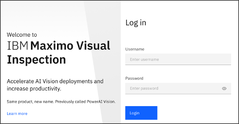
-
Click
Get Started.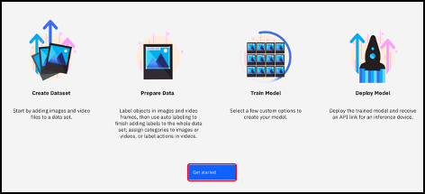
-
You should now be in the
Data Setstab.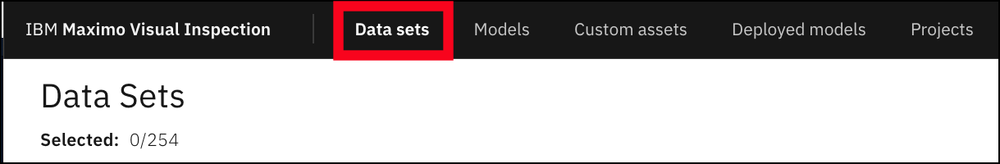
-
Select
Create new data set.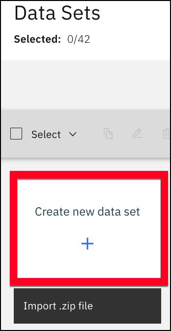
-
Name your net data set
Cans data set-YourInitials. Then,Create.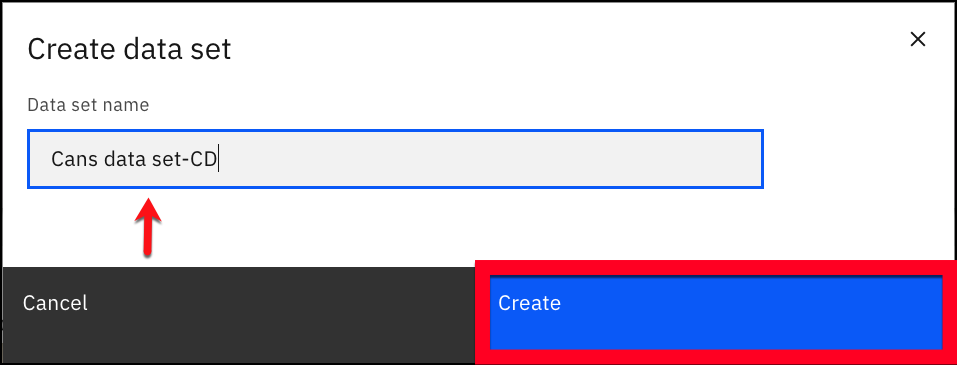
-
Select the bottom half of the data set you just created.
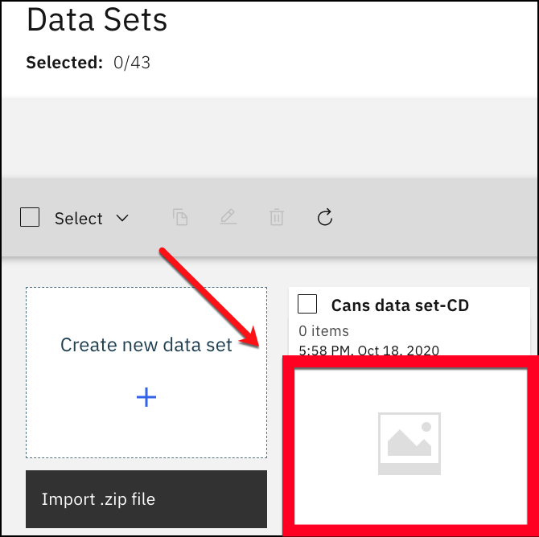
-
You will now drag and drop the 5 images of cans we provided you onto the
Drop files herebox or clickImport filesand select the images.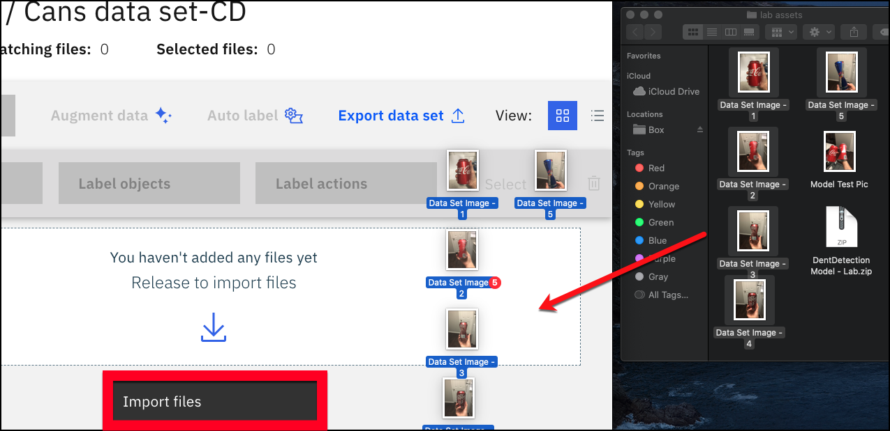
-
Select
Add files.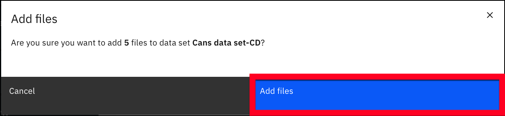
Once the images are done uploading, we will begin the labeling process for Object Detection.
-
Click the
Selectcheck box next to theLabel actionsbutton. Then, click on theLabel objectsbutton.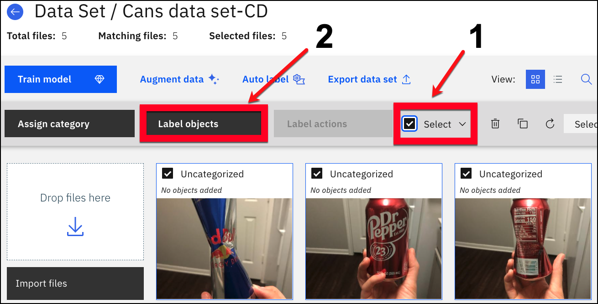
We will now add labels of cans that are dented and cans that are not dented.
-
On the right-hand side of the page click
Add Label.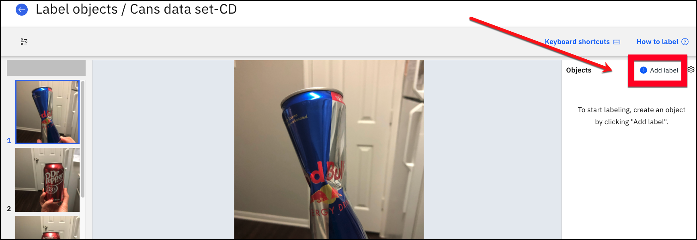
-
Type “good” and then hit the
Enterkey (or click theAddbutton). Then, type “bad_dented” and then hit theEnterkey (or click theAddbutton). Click theOkbutton when the labels are created.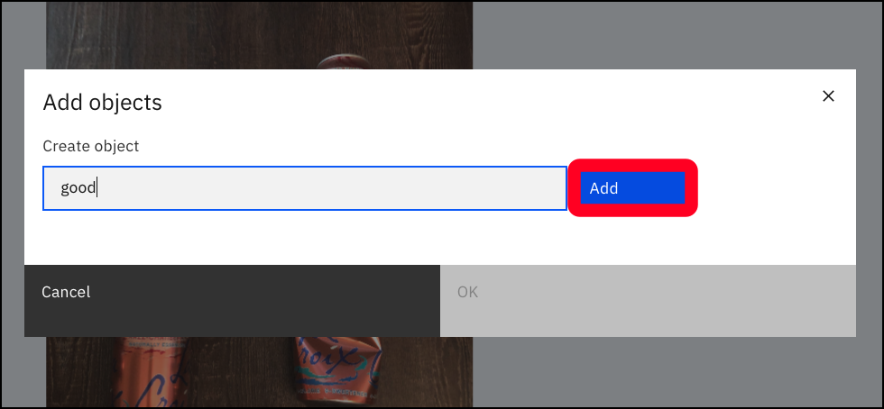 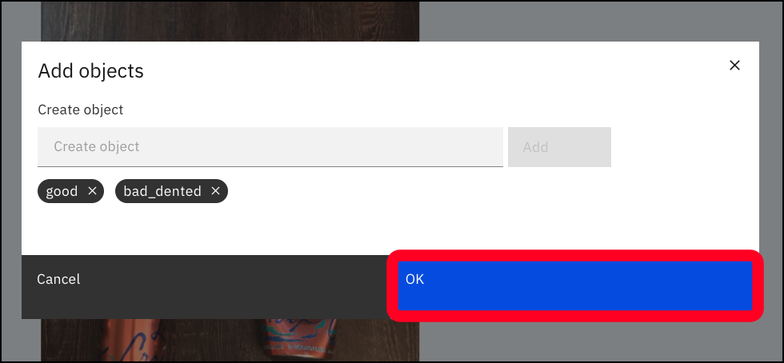
-
Look at the image and determine whether the can is “good” or “bad_dented”. Then, click the specific object name for the image and click the
Boxlabel.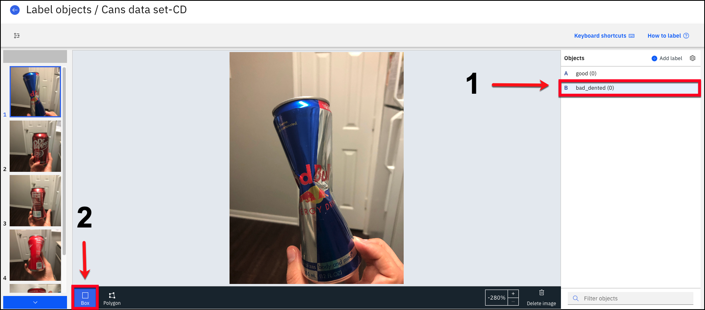
-
Click and drag your mouse over the can for each label. Labeling each can "good" or "bad_dented."

-
Try to get the boxes around the cans as close as possible. If you need to adjust your label, just uncheck the
Boxlabel first (box turns BLUE when ACTIVE, BLACK when not active) and use the 4 white corners to adjust the label. You may need to click on one of the can boxes to select it, if the 4 white corner boxes are not showing. You can also select the trash can symbol next to the label on the top right to delete it.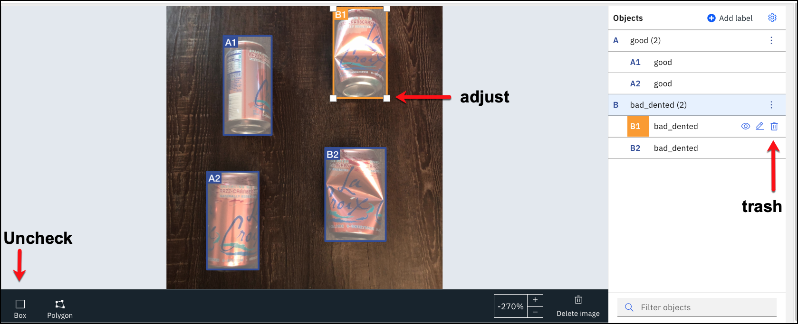
-
Use the
Blue Arrowto scroll up and down through all of the images or hover your mouse over and scroll. Label all of the “good” and “bad_dented” cans in all of the images.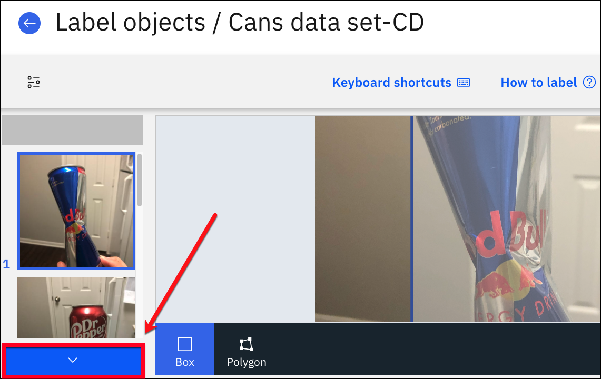
-
Once finished, go back to the data set by clicking the back arrow.
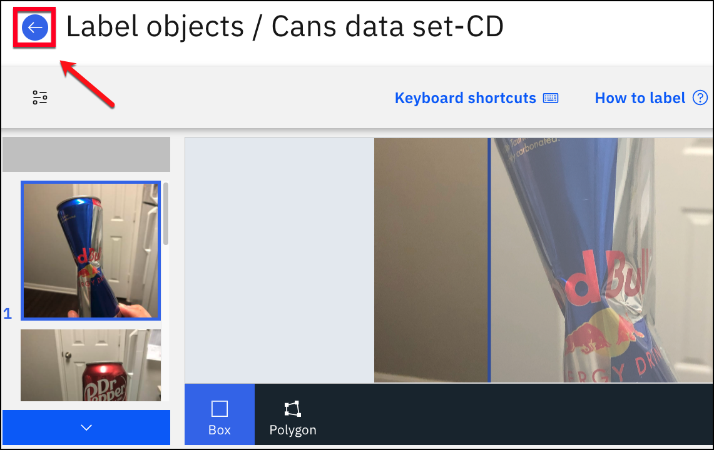
Data Augmentation
When building out a Deep Learning model the more images you add to your data set, the more accurate your model will be. Maximo Visual Inspection has a data augmentation feature which allows you to expand your original data set by applying one or more operations against the images. You can Blur, Sharpen, Noise, Color, Crop, Vertical Flip, Horizontal Flip, and Rotate your images. This will create a new data set with the added affects you choose. For the purpose of this lab, we will only be using the Horizontal flip and Vertical flip.
-
Now that your imaged have been labeled, let's begin to augment the data. You should be on our
Cans data Set-YourInitialsin the Data set tab.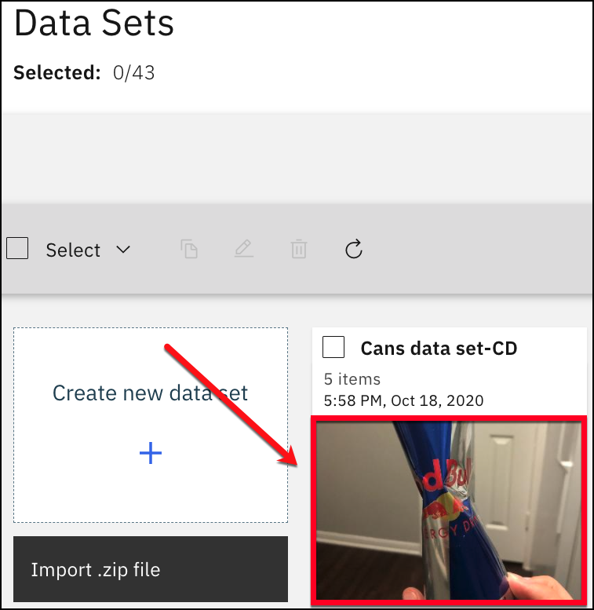
-
Now, click on the
Augment Databutton.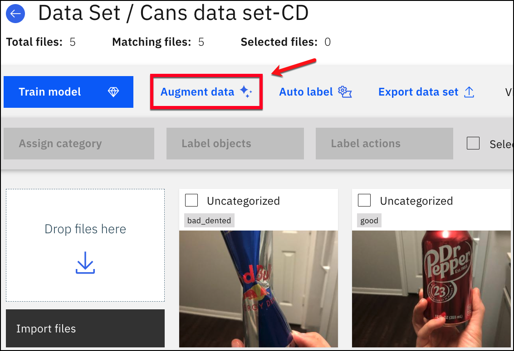
-
Click the
Vertical flipcheckbox, theHorizontal flipcheckbox, and then theContinuebutton. (you may have to use the scroll bar to the right and scroll down a little to display the vertical and horizontal flip options)
Note
Under New Creations, you can see how many new images will be created.
-
When prompted, enter
Cans-Augmented-YourInitialsfor the name of the new data set and then click theCreate data setbutton. Wait until the augmentation process completes. (the running status appears in the top right corner)
-
Click on the back button to return to the main data sets page.
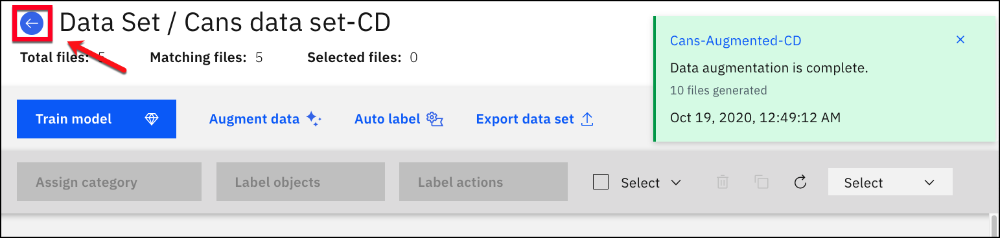
-
Your new augmented data set Cans-Augmented-YourInitials should be there, with three times the number of images than in your original data set.
-
Open this new data set that you just created by clicking in the lower half of the tile. You can see how MVI created these new images with each new image having a symbol on it, saving you time from taking more photos.
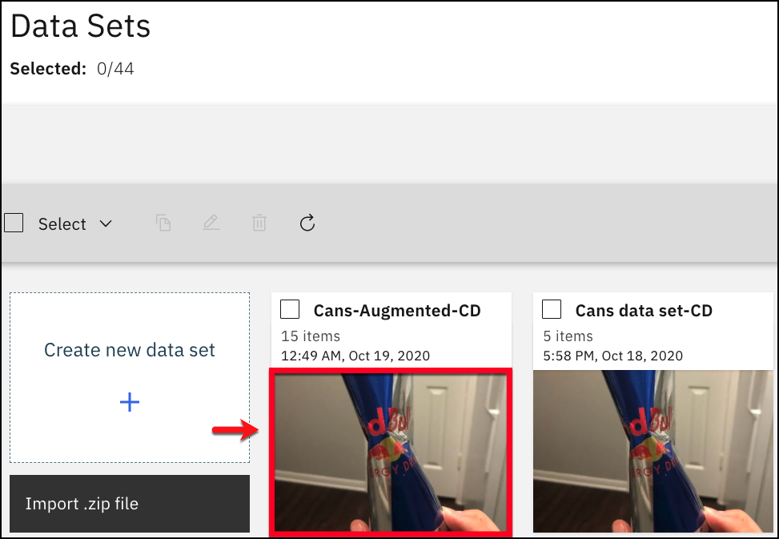
Congrats, you have made a data set that is ready to be trained!